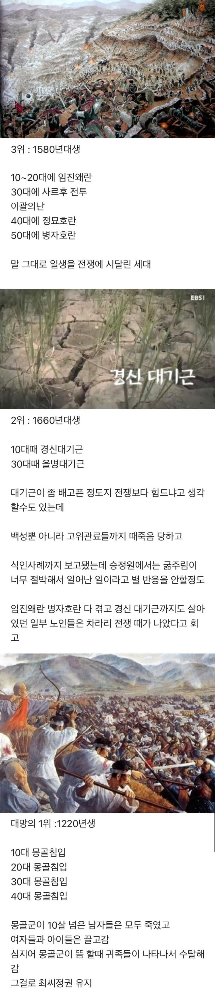

ㅠㅠ

ㅠㅠ
진지한숟갈) 친척이 살아남아있다면 대가 끊긴 것은 아니다
4위는 19세기 후반 세대일듯 대한제국, 일제시대, 6.25 등 다 겪은 세대
왕국-제국-식민지-군정-독재-민주주의를 다 겪은 세대....
고려말이 4위지.
왜란 호란보다 기근이 더 힘들지.. 근데 몽골이 더 감당 안되긴 하네
기근때는 왕족도 굶어 죽었다던데
이런 거 보면 우리 조상들은 어떻게 한거야 싶긴하다 ㅋㅋ
와 셋다 정말 장난아니네
의외로 홍건적 침입이 없노
기근 위가 더있어? 했는데 자연재해 몽골 4연빵은 어....
이런거 보면 지금이 젤 나
가
짐
이
1580년에 태어나서 대충 70년 넘게 살았으면 전쟁 4종세트 싹 겪고 말년에 경신대기근도 겪다 가셨다는건데 ㄷㄷ
저 땐 환갑잔치가 진짜 축제분위기였겠는데
떼
퉁퉁퉁퉁퉁 사후르 전투 ㄷㄷ
의외로 여말선초가 없네
이 때가 말도 안 되는 재앙의 시기였는데
육지에선 홍건적이 사람 죽이고 약탈하고
바다에서는 왜구가 침략하는데
이 떄 왜구들이 이상한게 단순 해적 수준이 아니라
어디서 작정하고 동원한 군대 수준이었다고 함
이 때 왜구는 일본 남북조시대 끝나면서 패배한 무로마치 막부 정규군인게 정설..
3위 인생을 산 사람 중 최대 아웃풋이 김충선이지
취업이랑 서울 집사기 어렵다고 90년대생이
최악의 세대니뭐니 징징대던거 생각하니 개웃기네
ㄹㅇㅋㅋ
최악의 기준이 모두 다른거니까 뭐
우리 할아버지 형제분 한명은 일제강점기때 강제징집, 광복후 징집 후 제대, 625때 다시 징집되셔서 전사하심
지금은 얼마나 평화로운 세대인가
한민족 어떻게 안망했냐
MZ세대:
우리가 제일 힘들어요 징징징 윗세대들은 개꿀로 부동산 샀는데 ㅜㅜ
코로나 때 해외여행 못가니까 우울증 걸릴 뻔했어요 ㅜㅜ
결혼하면 당연히 서울신축대단지아파트에서 시작해야하는데 그것도 불가능한게 나라인가요 ㅜㅜ
병신새끼
웟세대 부동산으로 꿀빤거맞잖아?
1220년생은 살아서 4번의 침공 다 경험해본 사람 자체가 적을거같네
근데 대기근오면 바다 주변 사람들은 상대적으로 피해 덜 봄?
그냥 배 타고 나가서 자급자족하면 안되나
그런 논리면 내륙 사람들도 산에 가서 산짐승 잡아먹고 풀뿌리 캐먹으면서 자급자족하면 됨 ㅋㅋ
고딩때 역사쌤이 저당시 북방민족 오랑캐들 전투력 설명해준게 기가막혔는데
거란족은 발업저글링이고 여진족은 발업히드라인데 둘다 막아봤으니 자신있게 몽골이랑 다이다이 콜 했더니 몽골은 발업울트라였던거라고..
저 모든 상황을 극복해내고 대를 이어간 부모님들... 존경스럽습니다 ㅠㅠ
최악의 세대는
586과 영포티와 2030과 mz세대와 잘파세대
와 쉬쌋음세대이다
근데 모든 시대 통 털어서 젤 투덜 거리는 건 2000년대 아닌가 ㅋㅋㅋㅋㅋ
무료로 투덜거림을 퍼트리고 들을 수 있는 매체가 발전한 시대지.. 미래로 갈수록 체감하는 징징 규모는 차원이 달라질 것
지금 20대들 아니었음? 취업안되고 집값 비싸다고 지랄났던데
상대적인거지 뭐 원래 남 팔잘린거 보다 내 발톱 찧은게 더 아픈 법임
저러고 현대와서 몽골이랑 잘지내고 이러는거 보면 아이러니해ㅋㅋㅋㅋ
일제감정기도 빡셀거같은데
그 어려운 시기를 이겨냈지만 개붕이들이 대를 끊는다